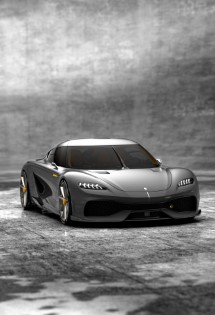
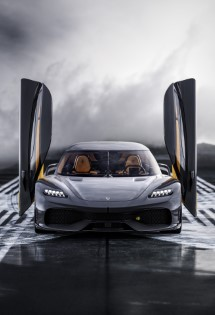

Koenigsegg Gemera

Exterior Front

Front

rear

exterior rear
Ultimate performance has belonged to the world of two-seaters with very limited luggage space – until now.
The Gemera is the world’s first Mega-GT and Koenigsegg’s first four-seater.
Extreme megacar meets spacious interior and ultimate environmental consciousness.
The notion behind Gemera’s name – a combination of the two Swedish words – “ge” (give) and “mera” (more) signifies “to give more”.
A suitable name for a car that adds features and functions without taking away anything that makes it a true megacar.